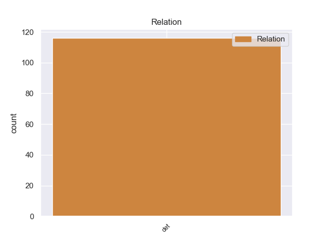
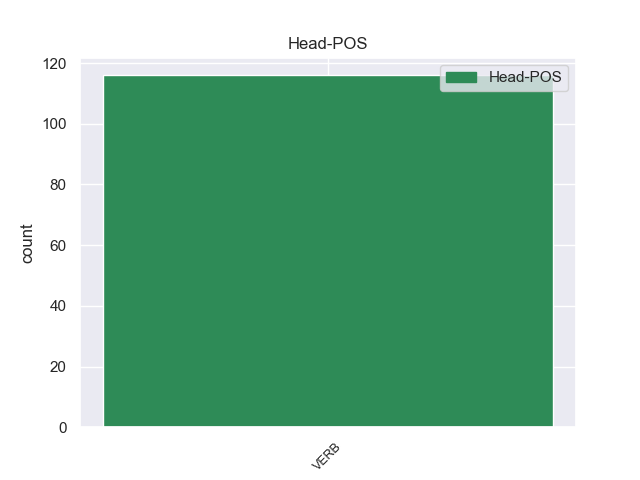
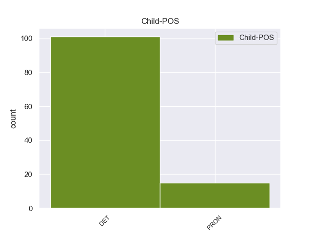

Distribution of features within this leaf



Agreement Rules sorted by frequency.
- When the dependent token is the determiner(det) of the head token, and the head token is VERB
1 Θα _ _ _ _ 0 _ _ _
2 μπορούσε _ _ _ _ 0 _ _ _
3 να _ _ _ _ 0 _ _ _
4 αποτελέσει _ _ _ _ 0 _ _ _
5 ορόσημο _ _ _ _ 0 _ _ _
6 για _ _ _ _ 0 _ _ _
7 την _ _ _ _ 0 _ _ _
8 ανάπτυξη _ _ _ _ 0 _ _ _
9 μιας _ _ _ _ 0 _ _ _
10 κοινωνικής _ _ _ _ 0 _ _ _
11 Ευρώπης _ _ _ _ 0 _ _ _
12 , _ _ _ _ 0 _ _ _
13 με _ _ _ _ 0 _ _ _
14 την _ _ _ _ 0 _ _ _
15 προϋπόθεση _ _ _ _ 0 _ _ _
16 ότι _ _ _ _ 0 _ _ _
17 θα _ _ _ _ 0 _ _ _
18 τη ο DET DET Case=Acc|Definite=Def|Gender=Fem|Number=Sing|PronType=Art 21 det _ _
19 λάβουμε _ _ _ _ 0 _ _ _
20 σοβαρά _ _ _ _ 0 _ _ _
21 υπόψη υπόψη VERB VERB Aspect=Perf|Mood=Ind|Number=Sing|Person=3|Tense=Past|VerbForm=Fin|Voice=Pass 0 _ _ _
22 και _ _ _ _ 0 _ _ _
23 δεν _ _ _ _ 0 _ _ _
24 θα _ _ _ _ 0 _ _ _
25 επιτρέψουμε _ _ _ _ 0 _ _ _
26 σ _ _ _ _ 0 _ _ _
27 τα _ _ _ _ 0 _ _ _
28 μεμονωμένα _ _ _ _ 0 _ _ _
29 κράτη _ _ _ _ 0 _ _ _
30 μέλη _ _ _ _ 0 _ _ _
31 να _ _ _ _ 0 _ _ _
32 δείξουν _ _ _ _ 0 _ _ _
33 απροθυμία _ _ _ _ 0 _ _ _
34 σχετικά _ _ _ _ 0 _ _ _
35 με _ _ _ _ 0 _ _ _
36 τα _ _ _ _ 0 _ _ _
37 μέτρα _ _ _ _ 0 _ _ _
38 που _ _ _ _ 0 _ _ _
39 πρέπει _ _ _ _ 0 _ _ _
40 να _ _ _ _ 0 _ _ _
41 ληφθούν _ _ _ _ 0 _ _ _
42 για _ _ _ _ 0 _ _ _
43 την _ _ _ _ 0 _ _ _
44 εφαρμογή _ _ _ _ 0 _ _ _
45 της _ _ _ _ 0 _ _ _
46 . _ _ _ _ 0 _ _ _
Disagree Examples:
1 Η _ _ _ _ 0 _ _ _
2 Ευρωπαϊκή _ _ _ _ 0 _ _ _
3 Ένωση _ _ _ _ 0 _ _ _
4 και _ _ _ _ 0 _ _ _
5 τα _ _ _ _ 0 _ _ _
6 κράτη _ _ _ _ 0 _ _ _
7 μέλη _ _ _ _ 0 _ _ _
8 της ο DET DET Case=Gen|Definite=Def|Gender=Fem|Number=Sing|PronType=Art 12 det _ _
9 θα _ _ _ _ 0 _ _ _
10 πρέπει _ _ _ _ 0 _ _ _
11 να _ _ _ _ 0 _ _ _
12 δώσουν δώνω VERB VERB Aspect=Perf|Mood=Ind|Number=Plur|Person=3|VerbForm=Fin|Voice=Act 0 _ _ _
13 το _ _ _ _ 0 _ _ _
14 παράδειγμα _ _ _ _ 0 _ _ _
15 και _ _ _ _ 0 _ _ _
16 να _ _ _ _ 0 _ _ _
17 παράσχουν _ _ _ _ 0 _ _ _
18 ένα _ _ _ _ 0 _ _ _
19 σημαντικό _ _ _ _ 0 _ _ _
20 μερίδιο _ _ _ _ 0 _ _ _
21 από _ _ _ _ 0 _ _ _
22 αυτούς _ _ _ _ 0 _ _ _
23 τους _ _ _ _ 0 _ _ _
24 πόρους _ _ _ _ 0 _ _ _
25 . _ _ _ _ 0 _ _ _
1 Σ _ _ _ _ 0 _ _ _
2 τα _ _ _ _ 0 _ _ _
3 σχέδιά _ _ _ _ 0 _ _ _
4 μας _ _ _ _ 0 _ _ _
5 περιλαμβάνεται _ _ _ _ 0 _ _ _
6 και _ _ _ _ 0 _ _ _
7 η _ _ _ _ 0 _ _ _
8 μεταβίβαση _ _ _ _ 0 _ _ _
9 σ _ _ _ _ 0 _ _ _
10 την ο DET AtDf Case=Acc|Gender=Fem|Number=Sing 11 det _ _
11 εν εν VERB VERB Aspect=Imp|Mood=Ind|Number=Plur|Person=3|Tense=Pres|VerbForm=Fin|Voice=Act 0 _ _ _
12 λόγω _ _ _ _ 0 _ _ _
13 αρχή _ _ _ _ 0 _ _ _
14 των _ _ _ _ 0 _ _ _
15 εργασιών _ _ _ _ 0 _ _ _
16 των _ _ _ _ 0 _ _ _
17 υφιστάμενων _ _ _ _ 0 _ _ _
18 πέντε _ _ _ _ 0 _ _ _
19 επιστημονικών _ _ _ _ 0 _ _ _
20 επιτροπών _ _ _ _ 0 _ _ _
21 . _ _ _ _ 0 _ _ _
1 Πρόκειται _ _ _ _ 0 _ _ _
2 να _ _ _ _ 0 _ _ _
3 εργαστούμε _ _ _ _ 0 _ _ _
4 σοβαρά _ _ _ _ 0 _ _ _
5 προκειμένου _ _ _ _ 0 _ _ _
6 οι _ _ _ _ 0 _ _ _
7 Ευρωπαίοι _ _ _ _ 0 _ _ _
8 να _ _ _ _ 0 _ _ _
9 αντιληφθούν _ _ _ _ 0 _ _ _
10 ότι _ _ _ _ 0 _ _ _
11 το _ _ _ _ 0 _ _ _
12 να _ _ _ _ 0 _ _ _
13 είναι _ _ _ _ 0 _ _ _
14 κανείς _ _ _ _ 0 _ _ _
15 Ευρωπαίος _ _ _ _ 0 _ _ _
16 αποτελεί _ _ _ _ 0 _ _ _
17 ένα ένας DET DET Case=Nom|Definite=Ind|Gender=Neut|Number=Sing|PronType=Art 18 det _ _
18 συν σμαι VERB VERB Aspect=Imp|Mood=Ind|Number=Plur|Person=3|Tense=Pres|VerbForm=Fin|Voice=Act 0 _ _ _
19 και _ _ _ _ 0 _ _ _
20 ότι _ _ _ _ 0 _ _ _
21 ο _ _ _ _ 0 _ _ _
22 ευρωπαίος _ _ _ _ 0 _ _ _
23 πολίτης _ _ _ _ 0 _ _ _
24 έχει _ _ _ _ 0 _ _ _
25 κάποια _ _ _ _ 0 _ _ _
26 θεμελιώδη _ _ _ _ 0 _ _ _
27 δικαιώματα _ _ _ _ 0 _ _ _
28 που _ _ _ _ 0 _ _ _
29 δεσμεύουν _ _ _ _ 0 _ _ _
30 τα _ _ _ _ 0 _ _ _
31 θεσμικά _ _ _ _ 0 _ _ _
32 όργανα _ _ _ _ 0 _ _ _
33 της _ _ _ _ 0 _ _ _
34 Ένωσης _ _ _ _ 0 _ _ _
35 . _ _ _ _ 0 _ _ _
1 Για _ _ _ _ 0 _ _ _
2 το _ _ _ _ 0 _ _ _
3 λόγο _ _ _ _ 0 _ _ _
4 αυτό _ _ _ _ 0 _ _ _
5 , _ _ _ _ 0 _ _ _
6 η ο DET DET Case=Nom|Definite=Def|Gender=Fem|Number=Sing|PronType=Art 7 det _ _
7 εν εν VERB VERB Aspect=Imp|Mood=Ind|Number=Plur|Person=3|Tense=Pres|VerbForm=Fin|Voice=Act 0 _ _ _
8 λόγω _ _ _ _ 0 _ _ _
9 βιομηχανία _ _ _ _ 0 _ _ _
10 λειτουργεί _ _ _ _ 0 _ _ _
11 ιδιαίτερα _ _ _ _ 0 _ _ _
12 απομονωμένη _ _ _ _ 0 _ _ _
13 χωρίς _ _ _ _ 0 _ _ _
14 πολλές _ _ _ _ 0 _ _ _
15 αλληλεπιδράσεις _ _ _ _ 0 _ _ _
16 με _ _ _ _ 0 _ _ _
17 τη _ _ _ _ 0 _ _ _
18 βιομηχανία _ _ _ _ 0 _ _ _
19 ηλεκτρονικών _ _ _ _ 0 _ _ _
20 υπολογιστών _ _ _ _ 0 _ _ _
21 , _ _ _ _ 0 _ _ _
22 δικτύων _ _ _ _ 0 _ _ _
23 λογισμικού _ _ _ _ 0 _ _ _
24 υλικού _ _ _ _ 0 _ _ _
25 και _ _ _ _ 0 _ _ _
26 συσκευών _ _ _ _ 0 _ _ _
27 πλαισίωσης _ _ _ _ 0 _ _ _
28 , _ _ _ _ 0 _ _ _
29 με _ _ _ _ 0 _ _ _
30 αποτέλεσμα _ _ _ _ 0 _ _ _
31 η _ _ _ _ 0 _ _ _
32 βιομηχανία _ _ _ _ 0 _ _ _
33 να _ _ _ _ 0 _ _ _
34 χάνει _ _ _ _ 0 _ _ _
35 όλο _ _ _ _ 0 _ _ _
36 και _ _ _ _ 0 _ _ _
37 μεγαλύτερα _ _ _ _ 0 _ _ _
38 τμήματα _ _ _ _ 0 _ _ _
39 της _ _ _ _ 0 _ _ _
40 αγοράς _ _ _ _ 0 _ _ _
41 σ _ _ _ _ 0 _ _ _
42 τις _ _ _ _ 0 _ _ _
43 ΗΠΑ _ _ _ _ 0 _ _ _
44 . _ _ _ _ 0 _ _ _
1 Η ο DET DET Case=Nom|Definite=Def|Gender=Fem|Number=Sing|PronType=Art 2 det _ _
2 εν εν VERB VERB Aspect=Imp|Mood=Ind|Number=Plur|Person=3|Tense=Pres|VerbForm=Fin|Voice=Act 0 _ _ _
3 λόγω _ _ _ _ 0 _ _ _
4 οδηγία _ _ _ _ 0 _ _ _
5 περιείχε _ _ _ _ 0 _ _ _
6 ορισμένες _ _ _ _ 0 _ _ _
7 μεταβατικές _ _ _ _ 0 _ _ _
8 διατάξεις _ _ _ _ 0 _ _ _
9 που _ _ _ _ 0 _ _ _
10 ίσχυαν _ _ _ _ 0 _ _ _
11 μέχρι _ _ _ _ 0 _ _ _
12 την _ _ _ _ 0 _ _ _
13 1η _ _ _ _ 0 _ _ _
14 Ιανουαρίου _ _ _ _ 0 _ _ _
15 1999 _ _ _ _ 0 _ _ _
16 . _ _ _ _ 0 _ _ _